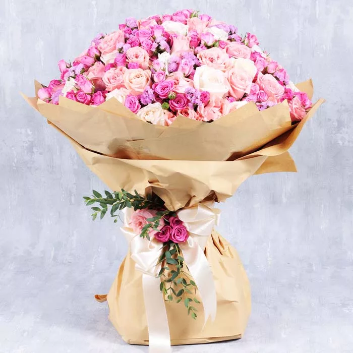

Rose and Spray Roses
Origin of Roses of Pink and Cream Shade :
Roses of pink and cream shades originated from Asia, particularly China. They have been cultivated
there for centuries for their beauty and fragrance. These roses have since spread worldwide and are
now popular in gardens and bouquets globally.
Origin of Spray Roses of Pink and Purple Shade :
Spray roses of pink and purple shades originated from Asia, especially China and Japan. They were bred
to produce multiple smaller blooms on a single stem, making them ideal for floral arrangements. These
compact, colorful roses have become popular worldwide for their vibrant appearance and versatility.